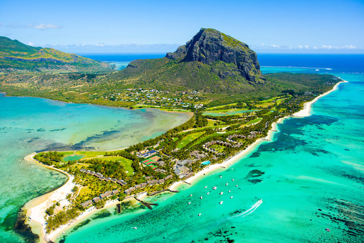
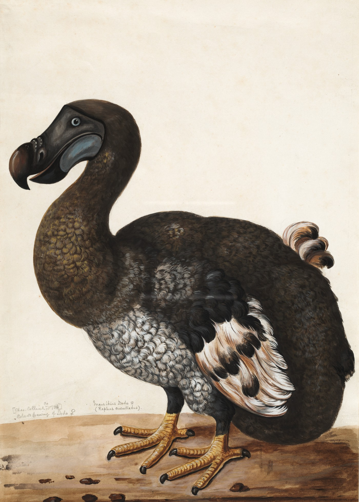
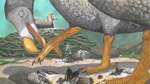

|  The Portugese arrived on Mauritius in the 16th century. This image was found from this website. |
Where it livedThe dodo lived on the island of Mauritius and Reunion, up until the end of the 17th century. |
|---|---|
What it looked likeThe Dodo had a large, hooked beak and a pair of small, useless wings and was coated in black to brown-grey feathers. It was plump and had a long, curved neck. However, this is questionable as the dodo has barely been documented by humans due to its rapid extinction. |
 This image was found on this website. |
|  This image was found from this website. |
What it ateThe dodo was likely to be a herbivorous bird that subsisted on nuts, fruits and seeds. Some scientists have also suggested that it may even have eaten seafood washd up on the shores like crabs and shellfish. This is as their relatives, the crowned pigeons, have also been observed to do so. |